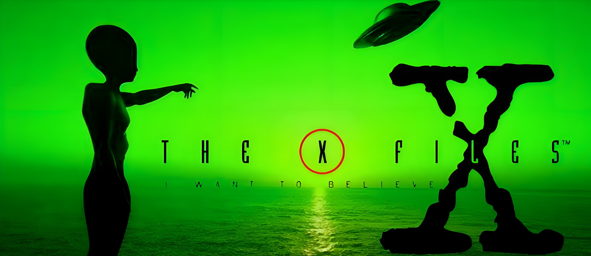
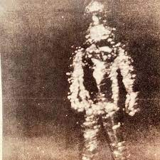
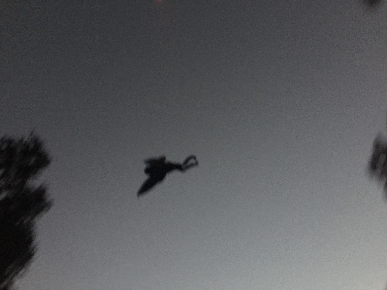

Descubre lo desconocido y explora los casos más aterradores.
Los Expedientes X son una colección de casos no resueltos investigados por el FBI, relacionados con fenómenos paranormales, avistamientos de criaturas extrañas, abducciones extraterrestres y eventos inexplicables que desafían la lógica. Bajo la dirección de los agentes Fox Mulder y Dana Scully, estas investigaciones revelan un mundo oculto lleno de misterios y conspiraciones que desafían la realidad conocida.
Mulder, un creyente apasionado de lo inexplicable, está convencido de que “la verdad está ahí fuera”. Por otro lado, Scully, con su enfoque científico y racional, busca encontrar explicaciones lógicas, aunque a menudo se enfrenta a sucesos que ponen a prueba su escepticismo.
Desde criaturas como el infame Flukeman hasta luces en el cielo que podrían ser de origen extraterrestre, los Expedientes X nos sumergen en lo desconocido, explorando los límites entre lo posible y lo imposible. ¿Tienes un caso que desafíe la razón? Envíanos tu reporte y ayúdanos a descubrir la verdad.

Un hombre de metal alto y delgado, con ojos rojos que brillaban en la oscuridad.
Leer más